.webp)
.webp)
.webp)
Peluqueria Canina
1. Stripping Profesional: Es una técnica manual para perros de pelo duro (como Schnauzers o Terriers) que extrae el pelo muerto para mantener la textura y color original.
Dermo-Grooming: Especializados en baños terapéuticos para pieles sensibles o con dermatitis, utilizando productos que ayuden a la recuperación del folículo.
Modelado Anatómico: Cortes que resaltan la estructura ideal de cada raza, aplicando "ciencia y arte" para que el perro luzca su mejor versión.
2. Bienestar nuestro servicio se transformá en una experiencia de "día de spa" para quienes buscan lo mejor para su mascota: Ozonoterapia: Baños con ozono que tienen efectos antiparasitarios, antiinflamatorios y relajantes.
Aromaterapia y Masajes: Uso de aceites esenciales seguros para perros que ayudan a reducir el estrés durante la sesión.
Higiene Dental Avanzada: Limpieza básica para prevenir el sarro.
3. Catálogo de "Antes y Después": fotos que demuestran el cambio radical y el cuidado en los detalles.
Asesoría Personalizada: al dueño en el estado del manto y qué necesita su perro específicamente.
Mantenemos en Reserva: La ficha de atencion a su mascota con los servicios y niveles requerido,
como la
higiene esencial del (baño, uñas, oídos, corte sanitario) Full, Básico y/o VIP/Spa.
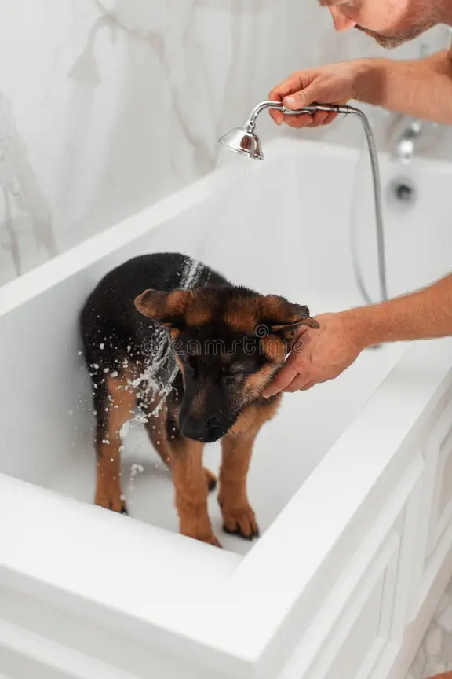
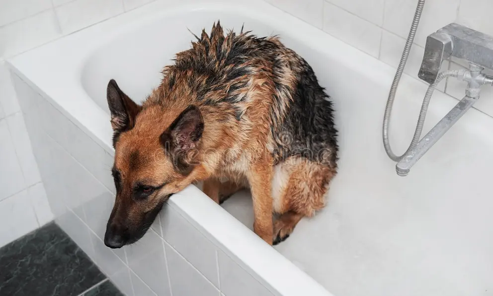
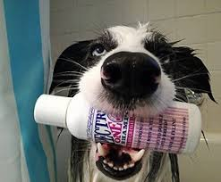
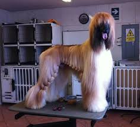
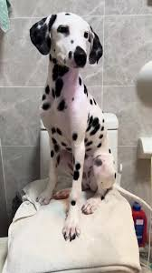
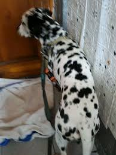
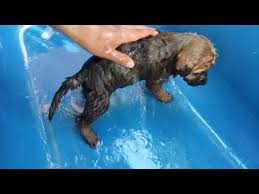
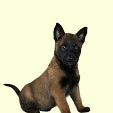
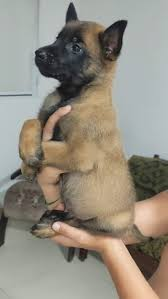
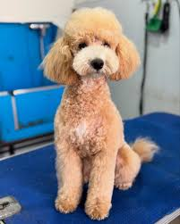
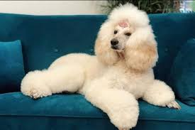
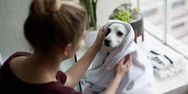
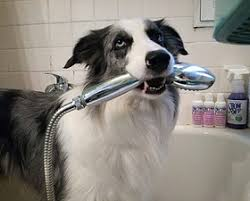
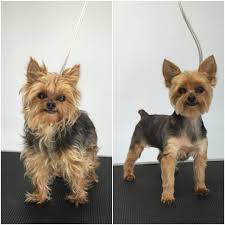
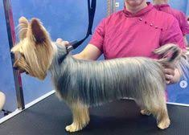
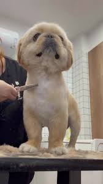

color marron castaño, pelo ondulado, tamaño de 24 a 28 cm, peso 2 kg y 4,5 kg
Esta raza puede crear vínculos rápidamente y luego aferrarse a la persona con la que estableció la primera relación
Un caniche micro toy (o toy) tiene una esperanza de vida media de 12 a 15 años, aunque con cuidados óptimos, buena genética y nutrición, pueden alcanzar los 16 a 18 años o incluso superar los 20.

color del pelaje es doble negro y fuego/bronceado, tamaños y peso del macho de 60-65 cm, 30-40 kg, y hembra de 55-60 cm y 22-32 kg.
Estos perros suelen exhibir una combinación de inteligencia excepcional, lealtad inquebrantable y una disposición trabajadora.
deben tener orejas erguidas (a partir de los 4-6 meses), espalda inclinada, ojos oscuros
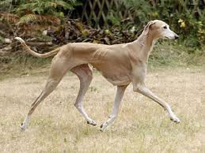
color marron crema, pelaje corto suave y fino, tamaño y peso del macho 71-76 cm, 30-32 kg, y las hembras rondan 69-71 cm, pesan entre 27-30 kg.
Galgo Español: Criadores enfocados en morfología de campo y estructura tradicional.
Galgo Inglés (Greyhound): Muchos pedigrees se centran en la velocidad, a menudo registrados tras retirarse de las carreras.